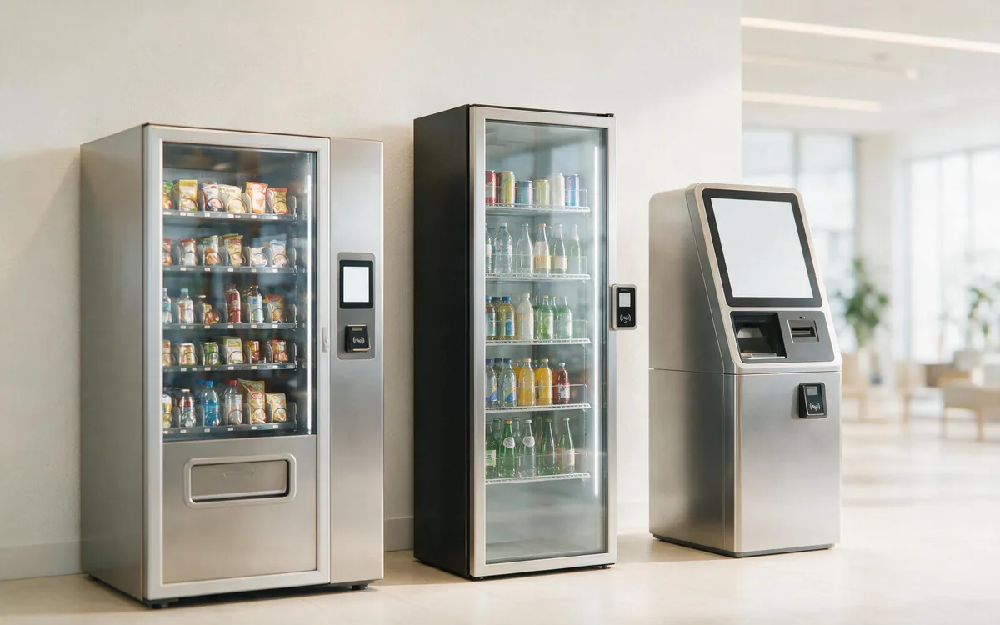

AI Vending vs. Micro Market: Which Format Fits Your Location?
Updated August 2026 · Editorial Team · 6 min read
AI vending is a single unit; a micro market is a mini-store. The format decision should follow location traffic and space, not vendor preference.

Five-dimension comparison
| Dimension | AI vending | Micro market |
|---|---|---|
| Payment | Auto-bills on take; tap and go | Self-checkout kiosk or scan-and-go at exit |
| Inventory | Vision-based, per-unit tracking | Shelf plus kiosk audit; RFID/weight assist |
| Product selection | Curated, small footprint (50-200 SKUs) | Full-store assortment (1,000+ SKUs) |
| Analytics | Per-transaction, item-level data | Basket-level at checkout, strong basket data |
| Loss prevention | Camera monitoring, low shrinkage | Open-room risk; kiosk audit controls |
Bottom line first
AI vending wins on footprint and simplicity. Micro markets win on selection and revenue when a location has enough traffic and space.
At a glance
| Factor | AI vending | Micro market |
|---|---|---|
| Footprint | Single unit | Store-like area |
| Selection | Shelf assortment | Wide, category-based |
| Upfront cost | $6,000 to $15,000 | $10,000 to $30,000 |
| Shrink risk | Low | Higher |
| Data | SKU-level | SKU-level |
When AI vending is the better bet
- Space is limited to one unit footprint.
- Traffic is steady but modest.
- The operator wants minimal setup and risk.
When a micro market wins
- Location has a dedicated room with high staff counts.
- Buyers want meals, grocery items, and variety.
- The operator can manage higher shrink exposure.
Economics comparison
Micro markets typically need several hundred transactions per week to justify setup cost. AI vending needs far less, which is why operators often place AI coolers first and upgrade proven locations.
Decision guide
| Situation | Recommendation |
|---|---|
| Small break area | AI vending |
| Large cafeteria-like space | Micro market |
| Fresh meals at scale | Micro market |
| Pilot before big investment | AI vending first |
ai-vending micro-market comparison